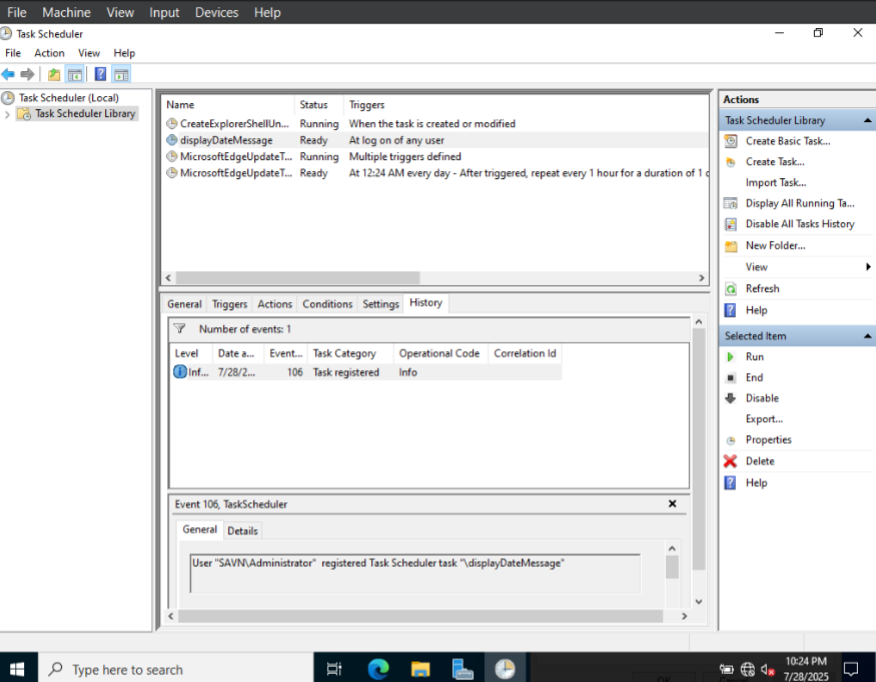

Image
Description
This was a project done in CNT4603, and involved scheduling tasks on a Windows Server 2022 on a virtual machine, as well as writing and utilizing powershell scripts.
Skills Learned
- Virtualization - Learned how to manage multiple virtual machines through one system.
- Powershell - Wrote and managed Powershell scripts.
- Utilized the task manager to create various tasks for the server to handle, including when a user logs in.